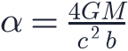
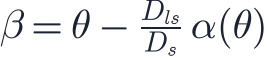
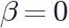
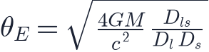
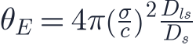
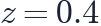
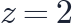
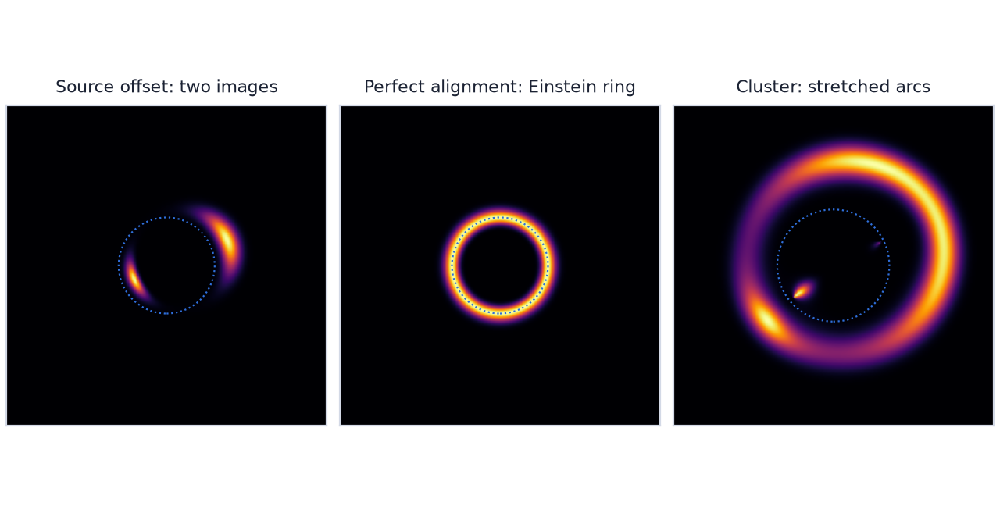
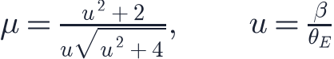

In this lesson you will learn
|
Light follows curved spacetime
In general relativity, mass curves spacetime and light follows that curvature
(lesson L0.4). A light ray passing a mass  at a distance is
deflected by the angle
at a distance is
deflected by the angle

twice the value a Newtonian calculation for a "particle of light" gives.
The 1919 eclipse For light grazing the Sun, the formula gives 1.75 arcseconds. During the total solar eclipse of 29 May 1919, expeditions led by Arthur Eddington and Frank Dyson photographed stars near the darkened Sun and found shifts consistent with Einstein's prediction. The result made Einstein world famous. Modern radio measurements confirm it to better than 0.1%. |
The lens equation
Consider a distant source, a lens in front of it, and an observer. Because the angles are tiny, simple geometry relates the true direction of the source to the direction in which we see it:

where , and are angular diameter distances to the lens, to the source, and from the lens to the source (lesson L2.7). One source position can correspond to several solutions : multiple images.
The Einstein radius
If source, lens and observer are perfectly aligned (

), the symmetry turns the image into a ring. For a point mass its angular radius, the Einstein radius, is
For a galaxy modelled as an isothermal sphere with velocity dispersion ,

Lensing weighs the lens The Einstein radius depends only on the total mass, visible or dark, and on distances. Measuring a ring's size measures the mass inside it, without any assumptions about stars, gas or dynamical equilibrium. |
Typical sizes With a lens at  and a source at (Planck 2018 distances):
|

Try it: Gravitational Lensing Simulator Drag the background galaxy behind a lens and watch two images merge into an Einstein ring. Then switch to a cluster and a field of galaxies. |
Three regimes
Strong lensing
When a source lies close to the line of sight of a massive galaxy or cluster, we see spectacular effects: multiple images, giant arcs, and Einstein rings.
- Strong lensing measures the mass of the inner parts of galaxies and clusters.
- Lenses act as natural telescopes: magnification by factors of 10–100 lets the James Webb Space Telescope study galaxies that would otherwise be too faint.
- If the source varies in brightness (a quasar or supernova), the images flicker with time delays of days to months, because the light paths have different lengths. The delays are proportional to , providing an independent measurement of the Hubble constant.
Weak lensing
Far from lens centres, the distortions are tiny: galaxy shapes are stretched by about 1%. Because galaxies have random intrinsic shapes, this weak lensing signal can only be measured statistically by averaging over many thousands of galaxies.
- Cluster weak lensing maps the total mass around clusters and was key to the Bullet Cluster evidence for dark matter (lesson L3.2).
- Galaxy–galaxy lensing measures the average dark matter halos of galaxies.
- Cosmic shear is lensing by the large-scale structure between us and distant galaxies. It measures the matter power spectrum and its growth directly, dark matter included. Surveys such as KiDS, DES and HSC, and now Euclid and the Vera C. Rubin Observatory, use it to measure (lesson L5.4).
CMB lensing Even the cosmic microwave background is lensed by all the structure it passes through. Planck, ACT and SPT reconstruct maps of all the matter in the observable universe from this subtle effect. |
Microlensing
When a star or planet in our galaxy passes in front of a background star, the images are unresolved, but the total brightness rises and falls over days to weeks. For a point lens the magnification is

- In the 1990s the MACHO, EROS and OGLE surveys searched for dark matter in the form of compact objects in the Milky Way halo and found far too few: most dark matter is not made of such objects.
- Short extra spikes in microlensing light curves reveal exoplanets, even Earth-mass planets far from their stars.
Lensing does not create light Lensing conserves surface brightness. Magnified images are brighter in total because they cover a larger area on the sky, not because the lens adds energy. |
Remember this
|